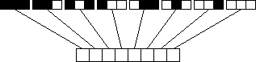

| As an example, we make a classifier system for CA. |
| List the neighborhood configurations in some fixed order, and then the CA rule can be interpreted as a string of answers to the question "Does this neighborhood configuration give a live cell?" |
| The string of answers to these questions is the genotype of the CA. |
| For example, N = 3, S = 2 CA have genotypes of the form |
|  |
| So the CA with genotype has the rule . |
Return to Genetic Algorithms and Artificial Evolution.